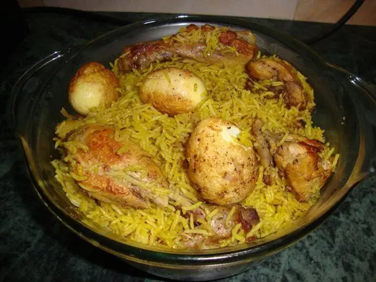

Easy Authentic Pakistani Recipes
Cook popular Pakistani food at home with clear ingredients and simple step-by-step methods. Browse biryani, karahi, nihari, pulao, BBQ, snacks, breakfast, desserts, drinks and vegetarian recipes inspired by everyday Pakistani cooking.

Browse Pakistani Recipes by Category
Pakistani Rice RecipesPakistani Chicken RecipesPakistani Beef RecipesPakistani BBQ RecipesPakistani Snack RecipesPakistani Breakfast RecipesPakistani Dessert RecipesPakistani DrinksPakistani Vegetarian Recipes
Familiar Pakistani Recipes
Chicken Biryani RecipeChicken Karahi RecipeBeef Nihari RecipeChicken Pulao RecipeChapli Kabab RecipePakistani Samosa RecipeHalwa Puri RecipeRice Kheer Recipe
Vegetarian choice
Try Rajma Masala with rice or warm chapati →
All Pakistani Recipes
{% for recipe_pair in site.data.recipes %}
{% assign r = recipe_pair[1] %}
{% assign hub_urdu = r.name_urdu %}{% unless hub_urdu %}{% assign hub_urdu = site.data.urdu_names[recipe_pair[0]] %}{% endunless %}
{{ r.name }} Recipe{% if hub_urdu %}{{ hub_urdu }}{% endif %}{{ r.category }} · {{ r.time }}{% if r.serves %} · Serves {{ r.serves }}{% endif %}
{% endfor %}